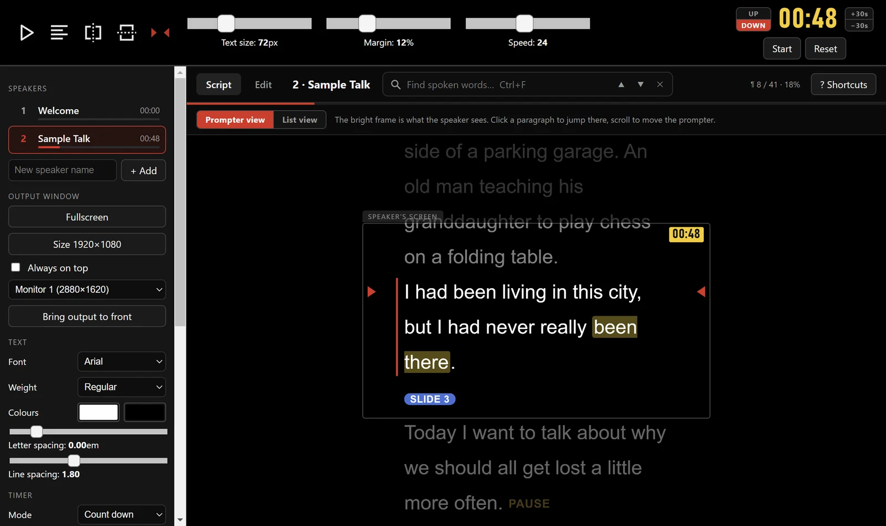
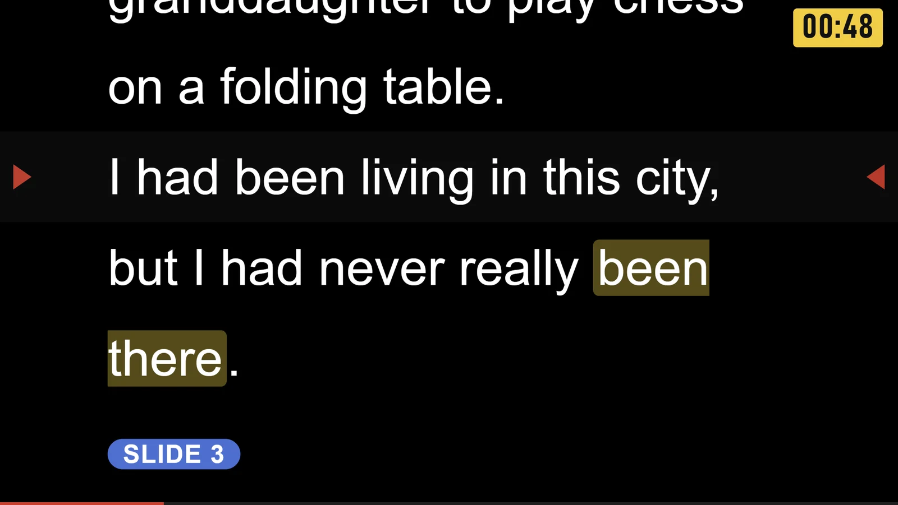
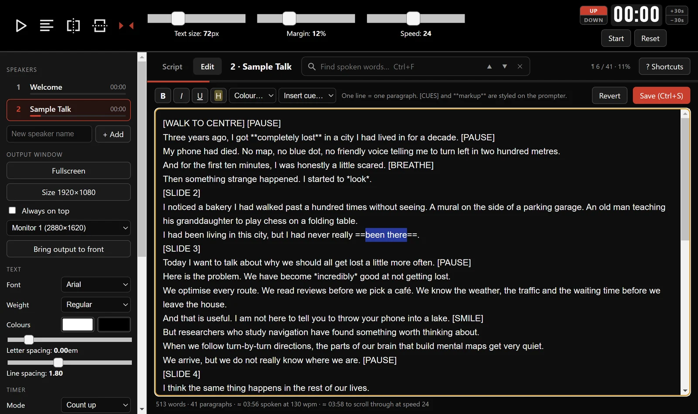
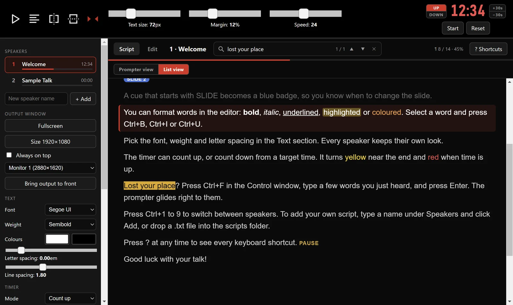

A smooth, free teleprompter for live talks, streams and recordings. One window for you, one for the speaker. Every speaker keeps their own look, place and timer.

The Output window shows only the script, a reading line and the timer. The Control window has everything else.



Press M and just talk. The prompter moves while you speak and stops when you pause. Speech recognition runs offline on your computer, so audio never leaves it.
Windows app, English. One-time voice pack download (about 150 MB) from inside the app.
The script moves on the GPU in one animation loop. Play, pause and speed changes ease in and out. Drag the slider.
Each speaker keeps their own settings and exact position. Ctrl 1…9 switches.
Type a few words the speaker just said and press Enter. The prompter glides so they land on the reading line.
Try it belowChoose a font, weight and spacing. Make words bold, italic, underlined, highlighted or coloured.
Open the playgroundYellow near the end, red at zero, then overtime.
Flip the text for beam-splitter glass. Cues like PAUSE and are styled so nobody reads them aloud.
This is the same scrolling and search logic as the app. Search for a few words from the talk, press Enter, and the prompter glides there. Click the screen to use the keyboard shortcuts.
Space play / pause · ↑ ↓ nudge · Shift ↑ ↓ speed · Home start · Ctrl F search
Scripts are plain .txt files with one line per paragraph. A little markup becomes real formatting on the prompter. Edit the text below, or select a word and use the toolbar or Ctrl B / I / U.
**really**really*slowly*slowly__never__never==been there==been there{orange}word{/}word[PAUSE] [SLIDE 3]PAUSE Each speaker counts up or down to their own target. The timer changes colour on its own, so the speaker knows how much time is left without looking away. Play with it:
Put the Output window on a confidence monitor, capture it in OBS, or both at once.
Get GlidePrompter.exe and double-click it. There's nothing to install. If Windows shows "Windows protected your PC", click More info → Run anyway, because the app isn't code-signed.
A GlidePrompter Scripts folder appears next to the .exe with two sample scripts. Drop in .txt files (one line per paragraph) or add speakers in the app.
Move the Output window to the stage screen and press F. In OBS, add a Window Capture of "GlidePrompter Output" with the method Windows 10 (1903 and up).
| Windows app | Web app | |
|---|---|---|
| Install | Single portable .exe | Nothing, it opens in Chrome / Edge / Firefox |
| Scripts stored in | A folder of .txt files you can edit anywhere | Your browser (import / download .txt) |
| Keeps running when covered or unfocused | Yes, always smooth for OBS | Only while the prompter window is visible |
| Fullscreen on a chosen monitor, always on top, exact 1920×1080 | Yes | Fullscreen only (press F in the prompter) |
| Profiles, search, formatting, timer, shortcuts | Yes | Yes |
The shortcuts work in both windows. Press a key now to find it in the list.
Yes. GlidePrompter is open source under the MIT license, with no account, ads or tracking. The web version stores your scripts only in your own browser.
The app isn't code-signed, because signing certificates are expensive. Click More info → Run anyway. You can also read the source on GitHub and build the .exe yourself with npm run dist.
It's a plain .txt file where every line is one paragraph. Name it like 3_Jane_Doe.txt. The number sets the order and the Ctrl 3 shortcut. Cues go in [BRACKETS] and formatting uses the markup shown above. Files that end each line with <br> (CuePrompter's paste format) also work.
Browsers pause windows that are minimised or fully covered, to save power. Put the prompter window on a second screen or next to the control window. GlidePrompter shows a warning when this happens. The Windows app turns this pausing off, so it stays smooth even when OBS captures a hidden window.
No. Speech recognition runs on your own computer, and audio never leaves it. The first time, the app downloads an English voice pack (about 150 MB, checked before use, removable any time). After that it works offline. It uses sherpa-onnx with NVIDIA's CC-BY-4.0 streaming FastConformer model. Follow mode is in the Windows app only, not the web version. A lavalier or a feed from the sound desk works better than the laptop's own microphone.
Yes. Press H to mirror horizontally (and V for vertically). Each speaker remembers this setting.
Not as a desktop download yet. They're planned in #1 (macOS) and #2 (Linux). Until then, the web app runs in any modern browser on any system, and npm start from the source code works on macOS and Linux too.
Download the Windows app or open it in your browser. Both include two sample scripts, so you can try everything right away.